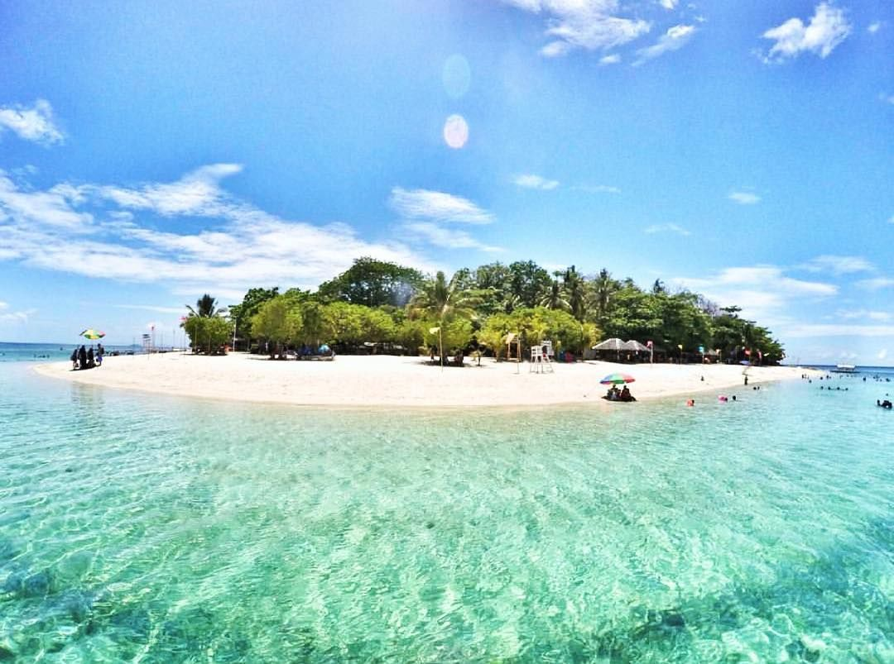
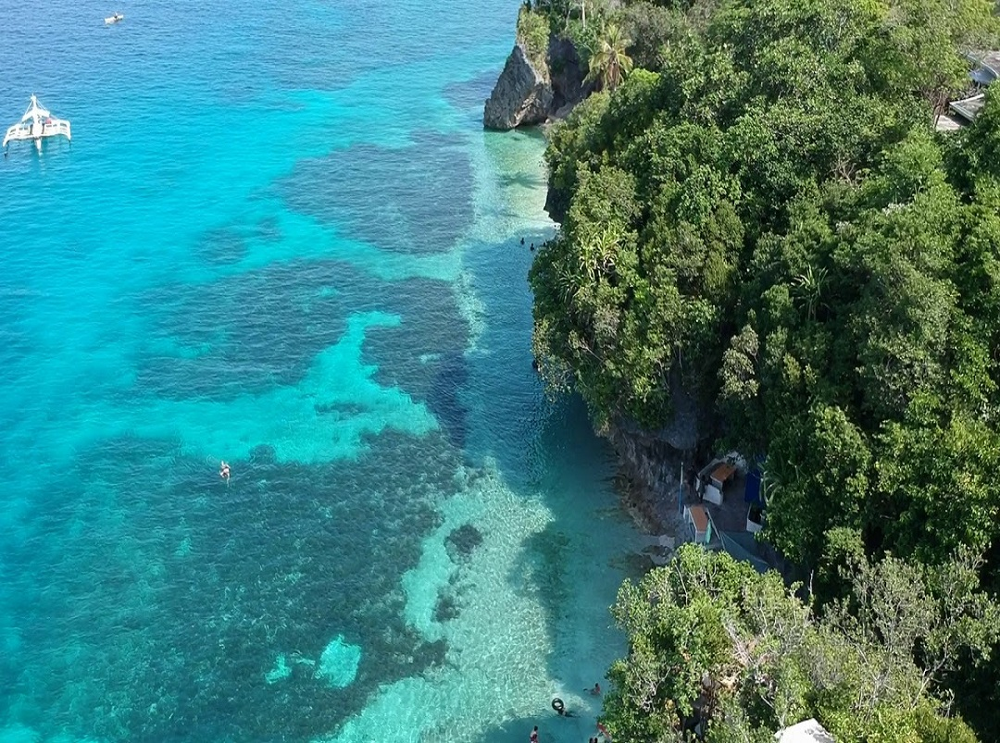
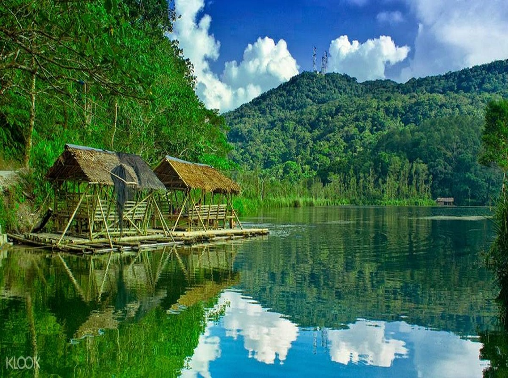
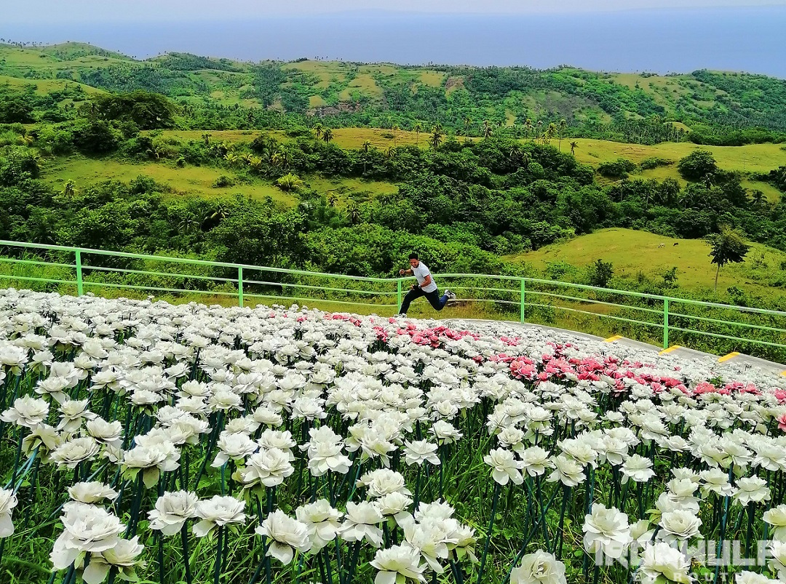
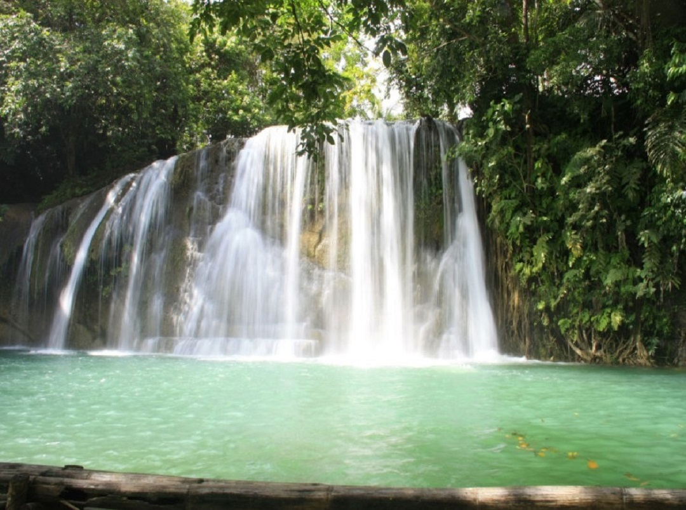

Tours and Travel
I'ts More Fun in Leyte!


Talangkaan Beach
Tangkaan Beach is one of the white sand beaches in Southern Leyte.

Lake Danao
Lake Danao is a guitar-shaped lake on the island of Leyte in the Philippines.

Lintaon Peak
It is located in Baybay City, going to the top of the mountain.
